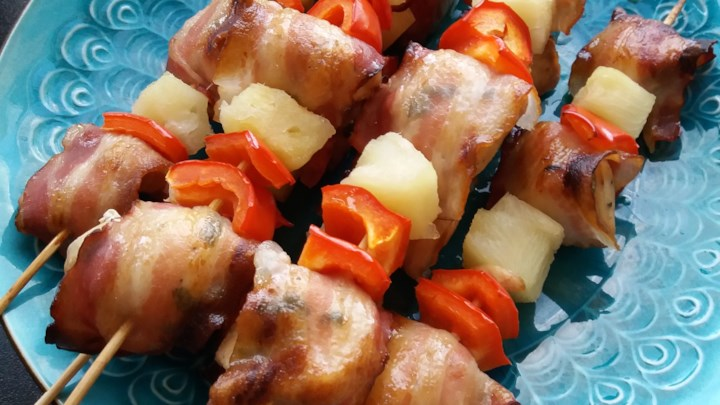
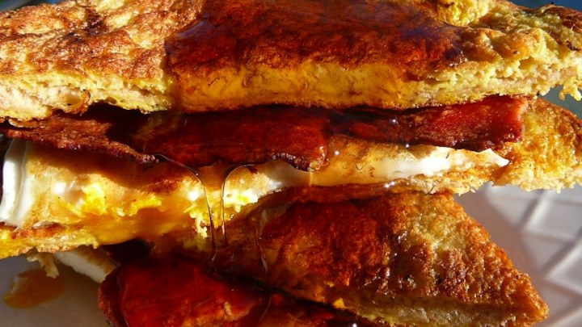

Bacon Recipes
Delicious and sophisticated recipes for smart and sophisticated people.

Chicken and Bacon Shish Kabobs
Ingredients
- 1/4 cup soy sauce
- 1/4 cup cider vinegar
- 2 tablespoons honey
- 2 tablespoons canola oil
- 10 large mushrooms, cut in half
- 2 green onions, minced
- 3 skinless, bonesless chicken breasst halves - cut into chunks
- 1/2 pound sliced thick cut bacon, cut in half
- 1 (8 ounce) can pinapple chunks, drained
Directions
- In a large bowl, mix the soy sauce, cider vinegar, honey, canola oil, and green onions. Place the mushrooms and chicken into the mixture, and stir to coat. Cover, and marinate in the refrigerator at least 1 hour.
- Preheat grill for high heat.
- Remove the mushrooms and chicken from the marinade and shake off excess. Pour the marinade into a small saucepan and bring to a boil over high heat. Reduce heat to medium-low and simmer for 10 minutes; set aside.
- Wrap the chicken chunks with bacon, and thread onto skewers so that the bacon is secured. Alternate with mushroom halves and pineapple chunks.
- Lightly oil the grill grate. Arrange skewers on the prepared grill. Cook 15 to 20 minutes, brushing occasionally with remaining soy sauce mixture, until bacon is crisp and chicken juices run clear.
BLT Wraps
Ingredients
- 1 pound thick sliced bacon, cut into 1 inch pieces
- 4 (12 inch) flour tortillas
- 1 cup shredded Cheddar cheese
- 1/2 head iceberg lettuce, shredded
- 1 tomato, diced
Directions
- Place bacon in a large, deep skillet. Cook over medium-high heat until evenly brown. Drain, and set aside.
- Place 1 tortilla on a microwave-safe plate. Sprinkle tortilla with 1/4 cup cheese. Cook in microwave 1 to 2 minutes, or until cheese is melted. Immediately top with 1/4 of the bacon, lettuce, and tomato. Fold sides of tortilla over, then roll up. Repeat with remaining ingredients. Cut each wrap in half before serving.
Irish Bacon And Cabbage Soup
Ingredients
- 1/2 pound Irish bacon, diced
- 2 large potatoes, peeled and cubed
- 1 (15 ounce) can diced tomatoes with juice
- 1 cup chicken stock, or as needed
- Salt and black pepper to taste
- 2 cups thinly sliced dark green Savoy cabbage leaves
Directions
- Place bacon in a large, deep stockpot or saucepan. Cook over medium high heat until evenly brown. Drain off any excess fat.
- Stir in potatoes, tomatoes, and enough chicken stock to cover. Season with salt and pepper. Bring to a boil, reduce heat and let simmer for 20 minutes, or until potatoes are tender.
- Stir in cabbage and allow the soup to simmer for a few minutes longer before serving.
Blue Bacon Stuffed Mushrooms
Ingredients
- 3 strips bacon
- 6 large mushrooms
- 1 tablespoon butter
- 1/2 onion, diced
- 1 clove garlic, sliced
- 3 ounces cream cheese
- 3 ounces blue cheese
- 1/3 cup bread crumbs
Directions
- Cook bacon strips in a large skillet over medium heat until crispy; drain on paper towels. While the bacon is cooking, remove stems from mushrooms. Set caps aside, and chop stems.
- Add butter to skillet with bacon grease. When melted, stir in mushroom stems, onion, and garlic. Cook, stirring frequently until the onions caramelize, 15 to 20 minutes.
- Preheat oven to 350 degrees F (175 degrees C). Spray a small baking dish with cooking spray.
- Once the onion mixture has reached a deep, rich brown color, place into a blender along with bacon, cream cheese, blue cheese, and bread crumbs. Blend on low until ingredients are roughly chopped and evenly combined. Stuff cheese mixture into mushroom caps and place into prepared baking dish.
- Bake in preheated oven until bubbly and lightly browned, 10 to 15 minutes.

French Egg and Bacon Sandwich
Ingredients
- 2 eggs, beaten
- 4 slices bread
- 4 slices bacon
- 2 eggs
- 1/2 cup maple syrup
Directions
- Dip bread slices in beaten eggs. Heat a lightly oiled griddle or frying pan over medium high heat. Cook until browned on both sides. Set aside but keep warm.
- Place bacon in a large, deep skillet. Cook over medium high heat until evenly brown. Drain and set aside. Reserve 1 tablespoon of bacon grease in pan and fry remaining two eggs.
- Place one piece of French toast on each of two plates. Place the fried eggs on top of the bread, top the eggs with strips of bacon. Cover with the remaining pieces of French toast. Following that by pouring on the syrup.

Chef John's BLT Pasta
Ingredients
- 1 tablespoon olive oil
- 1/2 pound bacon, cut crosswise into 1-inch pieces
- 2 cloves garlic, minced
- 2 teaspoons lemon zest
- 2/3 cup creme fraiche
- 2 cups ditalini pasta
- 2 cups halved cherry tomatoes
- 4 cups baby arugula, coarsely chopped
- salt and groud black pepper to taste
- 1 pinch cayenne pepper, or to taste
- 1 tablespoon freshly shredded Parmesan cheese, or to taste (optional)
Directions
- Pour olive oil into a heavy skillet over medium heat, add bacon, and cook until almost crisp, 5 to 8 minutes. Turn off heat. Hold a paper towel with tongs and mop up excess bacon grease with the paper towel, leave about 2 teaspoons bacon grease in the skillet.
- Stir minced garlic and lemon zest into bacon in the skillet and let cook in residual heat until fragrant, 2 to 3 minutes. Stir creme fraiche into bacon mixture.
- Bring a large pot of salted water to a boil and stir in 2 cups of ditalini. Cook till tender, about 8 minutes. Drain and add pasta to the skillet. Stir pasta thoroughly into bacon and creme fraiche mixture.
- Return skillet to medium heat. Add tomatoes; cook and stir until slightly softened, about 1 minute. Mix in arugula, stirring until wilted, about 30 seconds, and turn off heat.
- Season with salt, black pepper, and cayenne pepper. Stir again and garnish with Parmesan cheese.